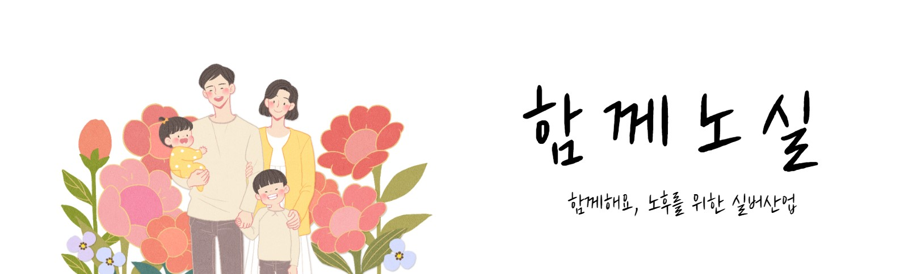

함께 교통 함께 노실과 알려주는 복지시설 가는 교통편에 대해 알아봅시다 √ 기흥구 복지관 가는법 ⦁ 버스 마을버스 35-1번, 35-2번, 35-3번 36번(새릉골, 풍림아파트 하차) 20-1번, 21번, 34-1번, 80번(신갈역, 새릉골 하차) 일반버스 820번, 690번(신갈역, 새릉골 하차) 27번, 116-1번, 116-3번(용인운전면허시험장 하차) ⦁ 지하철분당선 신갈역 1번, 2번 출구 도보 약 10분 √ 기흥구 보건소 가는법 ⦁ 버스 마을버스 35-1번, 18번, 28-1번, 28-2번, 53번 일반버스 10번, 27-1번, 66번, 66-4번, 99번 신갈파출소 앞 하차 (신갈초등학교 후문 신갈농협 옆) √ 용인시 기흥구 장애인 복지관 ⦁ 버스 마을버스 15-1 (복지관 앞 하차) 또는 35. 30. 31. 26. 49. 36-1. 34. 33. 57-2. 36. 25-1. 23. 57. 29. 23-1(삼성휴먼센터 하차) 일반버스 -분당방면에서 오실 때: 810. 820. 116-1. 116-3. 101. 1241. 1251. 5500-1. 7007-1 등 (삼성휴먼센터 하차)) -보정역 하차 후 4번 출구로 나와서 전방 200m에 있는 굴다리를 따라 이동, 굴다리 끝 좌측에 위치 용인방면에서 오실 때: 27. 67. 68. 690. 810. 116-1. 116-3. 101. 1251. 1241. 5500-1. 7007-1 등 (삼성휴먼센터 하차) 27번, 116-1번, 116-3번(용인운전면허시험장 하차) ⦁ 지하철보정역 4번 출구로 나와서 전방 200m에 있는 굴다리를 따라 이동, 굴다리 끝 좌측에 위치 √ 기흥구 삼성 노블카운티(문화센터, 스포츠센터) ⦁ 버스 분당, 수원방향에서 탈 시 버스 분당선 영통역 1번출구: 영통행 셔틀버스 이용 